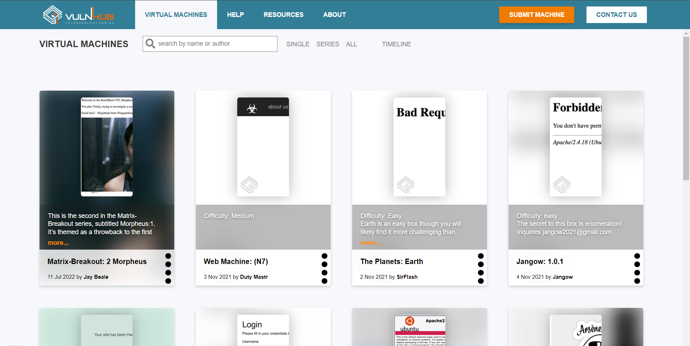

Добро пожаловать на страницу блога о прохождении виртуальных машин с платформы VulnHub!
Здесь вы найдете подробные пошаговые инструкции, технические детали и полезные советы по взлому и исследованию разнообразных уязвимых образов виртуальных машин. Я буду делиться своим опытом преодоления все более сложных задач, предлагаемых VulnHub.
Основная цель моего блога - помочь начинающим и практикующим специалистам в области этичного хакинга развивать свои навыки и расширять технические знания. Я подробно разбираю каждую виртуальную машину, объясняя применяемые техники и методы, чтобы вы могли самостоятельно повторить и закрепить полученные на практике уроки.
Если вы только начинаете свое путешествие в мир информационной безопасности, или уже имеете опыт работы с VulnHub, этот блог станет для вас ценным источником информации и вдохновения. Присоединяйтесь к нашему сообществу, делитесь своими наработками и читайте новые статьи - вместе мы сможем достичь больших высот в области этического хакинга!
